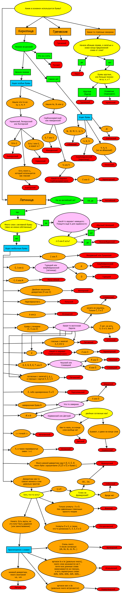

Увидев красивую и понятную блок-схему, описывающую, как отличать одну письменность от другой, я удивился. В первую очередь тому, что это оказалось кому-то интересным. Но раз уж та схема показалась любопытной, то я попробую продолжить тему, начатую уважаемым soulburner. Здесь речь пойдёт о том, как отличать друг от друга европейские языки.
Для начала – что такое европейские языки. Предлагаю ограничиться государственными языками стран Европы. Так как границы Европы – вещь спорная, то отдельно оговоримся про соседние страны. Духовно близкий Израиль, а также Грузию и Армению можно отличить по письменности из той же блок-схемы, Азербайджан и Казахстан я включу по доброте душевной, а Абхазию и Южную Осетию – в качестве прогиба перед российской властью. Так что абхазский в наш классификатор попадёт, а баскский и гэльский – ну уж нет, перебьются.
Языков больше, чем типов письменности. Поэтому диаграмка получилась большая. Отличать языки друг от друга будем в основном по особенным буквам, в частности, по буквам с диакритическими значками (диакритикой). Диакритика бывает над гласной (в букве й), над согласной (буква č) или может как-то сопровождать букву (как в букве ç; строго говоря это не дикритика вовсе, но мы здесь будем придерживаться такого жаргона). Наиболее известные (с моей точки зрения) значки в Европе — это умляут (он же диаерезис: ü), гачек (č) и акут (é).
